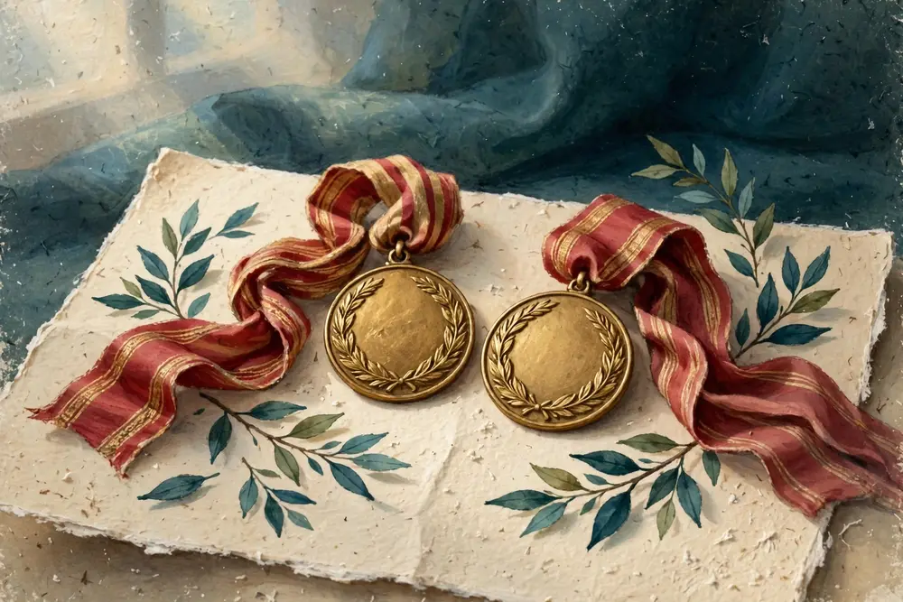

邱錦秀個人品牌網頁 · 圖片提示詞與來源
概念：〈一本初衷，一盞溫暖的燈〉。暖調水彩＋水粉插畫，珊瑚、米紙、古金、深青配色；母題為燈塔之光、捧心之手、心跳金線、獎章緞帶。插畫皆為場景與物件，不描繪本人肖像。
AI 概念插畫（8 張，重出 0 張）
IMG-001 · 金色愛心與海岸日出檔案：images/img-001-heart-hands.webp（首屏背景）
Warm editorial watercolor and gouache illustration, wide landscape composition: two cupped open hands gently holding a softly glowing golden heart, warm sunrise light over a calm Tainan coastline with a small distant lighthouse and fishing boats, soft coral, warm cream, antique gold and deep teal palette, visible brush texture and paper grain, hopeful, dignified and warm mood, no text, no letters, no words, no faces, no people other than the hands
IMG-002 · 繪本導讀檔案：images/img-002-storybook.webp
Warm gouache illustration: an open picture book on a wooden table glowing with warm lamplight, whimsical paper-cut birds, stars and small trees floating up out of its pages into the air, soft silhouettes of a parent and small child reading together in gentle shadow at the edge of the scene, cream, coral, sage green and warm gold palette, cozy and tender mood, painterly texture, no text, no letters, no words, no visible faces

IMG-003 · 諮詢專線檔案：images/img-003-hotline.webp
Warm retro gouache illustration: a classic cream-colored telephone receiver resting on a wooden desk beside a small vase of flowers, its coiled cord gracefully blooming into small flowers and hearts, soft morning light through a window, warm coral, gold and deep teal palette, gentle reassuring mood, painterly brush texture, no text, no letters, no numbers, no words, no people

IMG-004 · 雙金獎章檔案：images/img-004-medals.webp
Elegant still-life gouache illustration: two gold medals with soft red-and-gold ribbons resting on warm handmade paper, delicate laurel sprigs beside them, soft window light, antique gold, warm cream and deep teal palette, quiet dignity, visible painterly texture, no text, no letters, no words, no people

IMG-005 · 心跳金線檔案：images/img-005-pulse.webp
Warm watercolor illustration: a golden ECG heartbeat pulse line flowing across a warm dusk sky over a calm harbor, the line rising into a glowing sunrise on the horizon, gentle waves below, deep teal, coral and antique gold palette, hopeful mood, painterly texture and paper grain, no text, no letters, no words, no people

IMG-006 · 海岸淨灘檔案：images/img-006-beach.webp
Warm gouache illustration: golden-hour beach cleanup scene, several volunteer silhouettes in casual clothes picking up litter with grabbers and holding trash bags, sparkling sea and soft waves, a plain blue banner shape with no words fluttering on poles, warm coral, gold and deep teal palette, joyful community mood, painterly texture, no text, no letters, no words, no visible faces

IMG-007 · 眾手交疊檔案：images/img-007-hands.webp
Warm gouache illustration: many diverse hands of different ages stacked together in the center in a circle of teamwork, soft golden light radiating from the center, warm cream background with coral and deep teal accents, painterly texture, hopeful and united mood, no text, no letters, no words, no faces

IMG-008 · 燈塔檔案：images/img-008-lighthouse.webp
Warm watercolor illustration: a lighthouse on a rocky shore at dusk casting a warm golden beam across a calm harbor, small fishing boats, deep teal sea and sky with coral sunset clouds, a small coastal town with warm glowing window lights, serene and guiding mood, painterly texture and paper grain, no text, no letters, no words, no people

真實照片（9 張，皆為公開報導與社群貼文附圖）
PHOTO-1 · 頒獎台檔案：images/photo-award-stage.webp｜來源：臺南市家庭教育中心 FB 貼文 2026-10-28｜2026 年 10 月 17 日第四屆終身學習節，邱錦秀自教育部政務次長劉國偉手中接過獎座。
PHOTO-2 · 獻獎合影檔案：images/photo-dedication.webp｜來源：臺南市家庭教育中心 FB 貼文 2025-10-16｜獲獎志工於諮詢委員會中獻獎，葉澤山副市長代表接受。
PHOTO-3 · 終身學習節三人合影檔案：images/photo-trio.webp｜來源：臺南市家庭教育中心 FB 貼文 2026-10-28。
PHOTO-4 · 教學者組得獎者合影檔案：images/photo-group8.webp｜來源：臺南市家庭教育中心 FB 貼文 2026-10-28。
PHOTO-5 · 獻獎六人合影檔案：images/photo-dedication-group.webp｜來源：臺南市家庭教育中心 FB 貼文 2025-10-16。
PHOTO-6 · 愛從陪伴開始檔案：images/photo-ltn.webp｜來源：自由時報 2026-09-03 報導附圖（圖由教育局提供）。
PHOTO-7 · 2021 感恩餐會檔案：images/photo-banquet2021.webp｜來源：中華日報 2022-01-04 報導附圖（民眾提供）。
PHOTO-8 · 2022 感恩餐會檔案：images/photo-banquet2022.webp｜來源：中華日報 2022-12-28 報導附圖（民眾提供）。畫面中間為碳佐麻里總裁邱蔡亮。
PHOTO-9 · 三三讀書會 CPR 課程檔案：images/photo-cpr.webp｜來源：中華日報 2025-08-21 報導附圖（三三讀書會提供）。